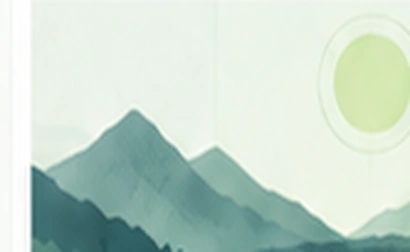
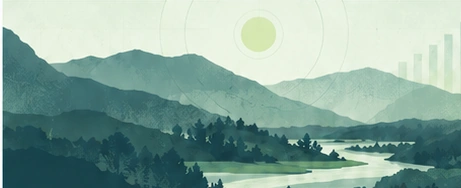

ECONOMÍA
Productividad en América Latina: tendencias y desafíos para la próxima década
Un análisis de las brechas de productividad, sus determinantes y las oportunidades para un crecimiento más inclusivo.
DATOS / ANÁLISIS / EVIDENCIA
Lighthouse D&A es un espacio independiente de análisis, visualización y narrativa de datos. Exploramos temas económicos y sociales con rigor, para aportar evidencia que ilumine la conversación.
Contenido de muestra para visualizar el diseño. Estos artículos todavía no han sido publicados.
ECONOMÍA
Un análisis de las brechas de productividad, sus determinantes y las oportunidades para un crecimiento más inclusivo.
SOCIEDAD
Exploramos la confianza ciudadana en América Latina y los factores que la explican a partir de encuestas.

MEDIO AMBIENTE
Un repaso de los datos clave sobre las energías limpias y su impacto en el desarrollo sostenible.
POLÍTICAS PÚBLICAS
Revisamos la evidencia sobre programas efectivos para el desarrollo infantil temprano.
TECNOLOGÍA
Un análisis de casos de uso, riesgos y recomendaciones para una adopción responsable.

MEDIO AMBIENTE
Un ejercicio con datos simulados para explorar la lectura de un análisis económico. Incluye dos gráficos, una tabla descargable y notas metodológicas; no presenta estimaciones reales para la región.
SOBRE LIGHTHOUSE D&A
Creemos que las buenas preguntas, el pensamiento crítico y la evidencia ayudan a comprender mejor nuestro entorno. Este es un espacio para explorar esas preguntas con libertad, rigor y claridad.
Conoce nuestra forma de trabajarPróximamente conocerás al equipo y nuestras primeras publicaciones.